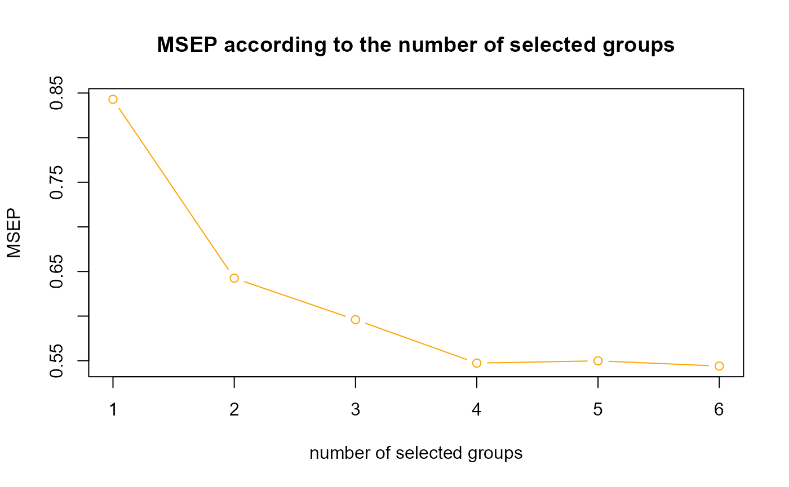
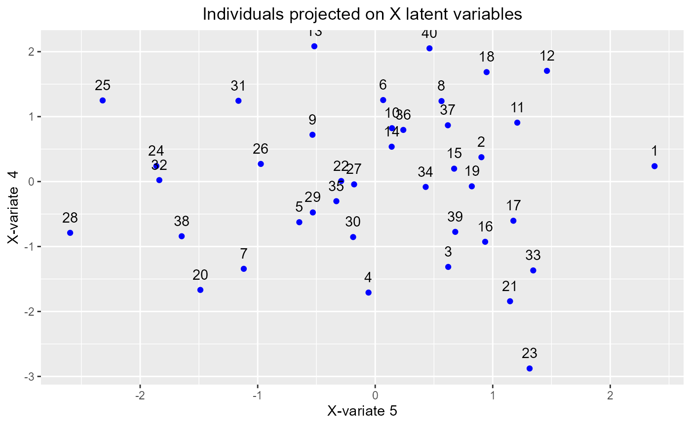
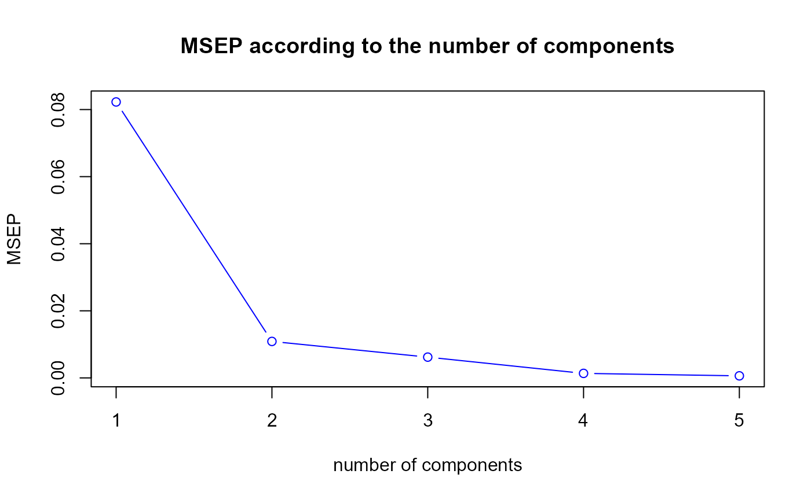
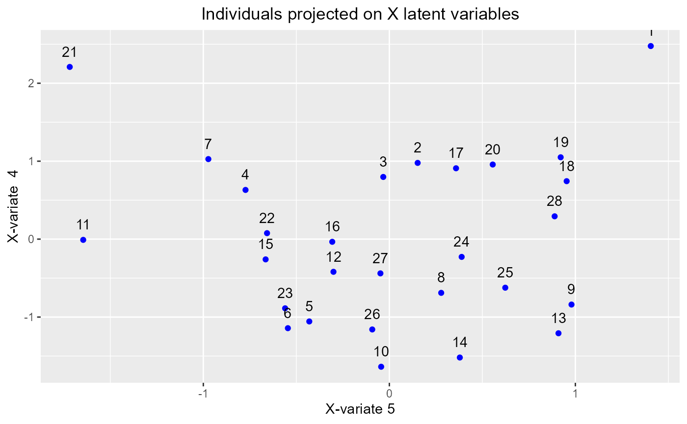

gPLS performance
2025-09-03
gPLS_perf.RmdIntroduction
This page presents an application of the gPLS performance assessment. Like the PLS method, there are several predictions according to the components number selected in the model. The goal is to choose the best number of component in gPLS regression in order to compute the best possible predictions but also to select the best number of groups of variables. For that, we will use two datasets:
one dataset with 18 variables ans 12 variables
one dataset containing real data about NIR spectra.
To access to predefined functions from sgPLSdevelop package and manipulate these datasets, run these lines:
library(sgPLSdevelop)
library(pls)
data1 <- data.create(p = 18, q = 12)
data(yarn)
data2 <- yarn## [1] "First dataset dimensions : 40 x 30"## [1] "Second dataset dimensions : 28 x 269"gPLS performance assessment using MSEP
An good way to assess such a model performance consists by using criterion. is computed as follow :
The following code lines will allow to select the best number of components and then the best number of groups for each dataset. Some plots will accompany the results.
However, one might wonder if the best number of components is the same whatever the number of selected groups. There will be therefore, for each dataset, a subsection showing a plot of the for each number of groups and for each number of components simultaneously.
First dataset
Let’s consider that the first dataset contains for example 6 groups of 3 variables in .
ncomp.max <- 5
# First dataset
X <- data1$X
Y <- data1$YSelection of the best number of components
ind.block.x <- seq(3,15,3)
ngroups <- 6
keepX <- rep(ngroups,ncomp.max)
model1 <- gPLS(X,Y,ncomp = ncomp.max, keepX = keepX, ind.block.x = ind.block.x)
perf.res1 <- perf.gPLS(model1, progressBar = FALSE)
msep <- perf.res1$MSEP
h.best <- perf.res1$h.best.msep
h.best2 <- order(msep)[2]
plot(msep, type = "b", col = "blue", main = "MSEP according to the number of components", xlab = "number of components", ylab = "MSEP")
In this case, we therefore choose 5 components.
Selection of the best number of groups
grid.X <- 1:ngroups # grid for the number of groups of variables
tun <- tuning.gPLS.X(X,Y,ncomp = h.best,grid.X = grid.X,setseed = 1,ind.block.x = ind.block.x)
keepX.best <- tun$keepX
msep.gr <- tun$MSEP
plot(msep.gr, type = "b", col = "orange", main = "MSEP according to the number of selected groups", xlab = "number of selected groups", ylab = "MSEP")
And we keep 6 variable groups.
Checking of the best number of components
grid.h <- 1:ncomp.max
data.msep <- data.frame(row.names = 1:ngroups)
lty = rep(1,ncomp.max)
min.msep <- 100
max.msep <- 0
for(h in grid.h){
tun <- tuning.gPLS.X(X,Y,ncomp = h,grid.X = grid.X,setseed = 1,ind.block.x = ind.block.x)
msep <- tun$MSEP
data.msep <- data.frame(data.msep,msep)
if(min(msep) < min.msep){min.msep <- min(msep)}
if(max(msep) > max.msep){max.msep <- max(msep)}
}
colnames(data.msep) <- paste0("comp",1:ncomp.max)
# plot display
matplot(data.msep, type = "b", col = grid.h, ylim = c(min.msep,max.msep), ylab = "MSEP", xlab = "Number of selected groups", lty = lty, main = "MSEP according to the number of selected groups")
The previous plot confirms the
is lower when we increase the number of components. Here the
ncomp.max is set to
but we may also raise this value and the
might be even lower.
Population dispersion
Now let’s take a look about the population projected on the best components
keepX.best <- rep(keepX.best,ncomp.max) # In gPLS function, keepX must be a vector.
model1 <- gPLS(X,Y,ncomp = ncomp.max, keepX = keepX.best, ind.block.x = ind.block.x)
pop.model1 <- plot.indiv(model1, compX = c(h.best,h.best2))
pop.model1$graphX
Second dataset
Let’s consider now that the second dataset contains for example 27 groups in (26 groups of size 10 and 1 group of size 8).
# Second dataset
X <- data2$NIR
Y <- data2$densitySelection of the best number of components
ind.block.x <- seq(10,260,10)
ngroups <- 27
keepX <- rep(ngroups,ncomp.max)
model2 <- gPLS(X,Y,ncomp = ncomp.max, keepX = keepX, ind.block.x = ind.block.x)
perf.res2 <- perf.gPLS(model2, progressBar = FALSE)
msep <- perf.res2$MSEP
h.best <- perf.res2$h.best.msep
h.best2 <- order(msep)[2]
plot(msep, type = "b", col = "blue", main = "MSEP according to the number of components", xlab = "number of components", ylab = "MSEP")
In this case, we therefore choose 5 components.
Selection of the best number of groups
grid.X <- 1:ngroups # grid for the number of groups of variables
tun <- tuning.gPLS.X(X,Y,ncomp = h.best,grid.X = grid.X,setseed = 1,ind.block.x = ind.block.x)
keepX.best <- tun$keepX
msep.gr <- tun$MSEP
plot(msep.gr, type = "b", col = "orange", main = "MSEP according to the number of selected groups", xlab = "number of selected groups", ylab = "MSEP")
And we keep 4 variable groups.
Checking of the best number of components
grid.h <- 1:ncomp.max
data.msep <- data.frame(row.names = 1:ngroups)
lty = rep(1,ncomp.max)
min.msep <- 100
max.msep <- 0
for(h in grid.h){
tun <- tuning.gPLS.X(X,Y,ncomp = h,grid.X = grid.X,setseed = 1,ind.block.x = ind.block.x)
msep <- tun$MSEP
data.msep <- data.frame(data.msep,msep)
if(min(msep) < min.msep){min.msep <- min(msep)}
if(max(msep) > max.msep){max.msep <- max(msep)}
}
colnames(data.msep) <- paste0("comp",1:ncomp.max)
# plot display
matplot(data.msep, type = "b", col = grid.h, ylim = c(min.msep,max.msep), ylab = "MSEP", xlab = "Number of selected groups", lty = lty, main = "MSEP according to the number of selected groups")
The previous plot confirms the
is lower when we increase the number of components. Here the
ncomp.max is set to
but we may also raise this value and the
might be even lower.
Population dispersion
Now let’s take a look about the population projected on the best components
keepX.best <- rep(keepX.best,ncomp.max) # In gPLS function, keepX must be a vector.
model1 <- gPLS(X,Y,ncomp = ncomp.max, keepX = keepX.best, ind.block.x = ind.block.x)
pop.model1 <- plot.indiv(model1, compX = c(h.best,h.best2))
pop.model1$graphX